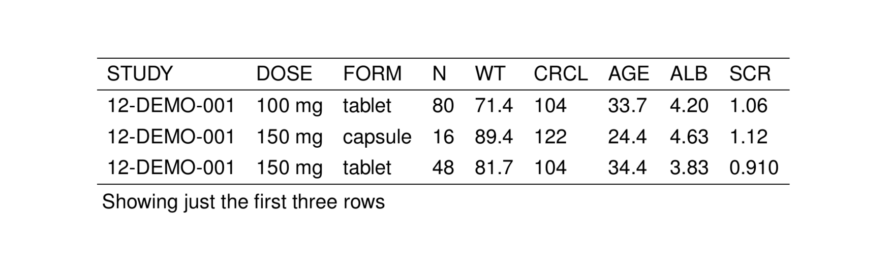

2.1 Syntax
Pass your data.frame into stable()
Other formal arguments include:
- align to set column alignment
- panel to create groups of rows under a “panel” header
- span to group columns under a “spanner” header
- notes to create table notes
- sumrows to insert summary rows
- units that get placed below the corresponding column name
- drop to omit certain columns from the table
- sizes to set different table size attributes
- escape_fun a function to sanitize table items
You can also pass a bunch of other arguments through ... to further format the table (see ?stable for details)
2.2 Basics
stable() is the name of the workhorse function that is used to turn data.frames into TeX tables. This chapter will introduce the stable() function and how to us it to create basic tables.
To illustrate usage and features of stable(), we will use the stdata data set that comes with pmtables
. # A tibble: 6 × 9
. STUDY DOSE FORM N WT CRCL AGE ALB SCR
. <chr> <chr> <chr> <chr> <chr> <chr> <chr> <chr> <chr>
. 1 12-DEMO-001 100 mg tablet 80 71.4 104 33.7 4.20 1.06
. 2 12-DEMO-001 150 mg capsule 16 89.4 122 24.4 4.63 1.12
. 3 12-DEMO-001 150 mg tablet 48 81.7 104 34.4 3.83 0.910
. 4 12-DEMO-001 150 mg troche 16 94.0 93.2 27.4 4.94 1.25
. 5 12-DEMO-001 200 mg tablet 64 67.9 100 27.5 4.25 1.10
. 6 12-DEMO-001 200 mg troche 16 76.6 99.2 22.8 4.54 1.15We can turn this data frame into a TeX table by passing it into stable().
. [1] "\\setlength{\\tabcolsep}{5pt} "
. [2] "\\begin{threeparttable}"
. [3] "\\renewcommand{\\arraystretch}{1.3}"
. [4] "\\begin{tabular}[h]{lllllllll}"
. [5] "\\hline"
. [6] "STUDY & DOSE & FORM & N & WT & CRCL & AGE & ALB & SCR \\\\"
. [7] "\\hline"
. [8] "12-DEMO-001 & 100 mg & tablet & 80 & 71.4 & 104 & 33.7 & 4.20 & 1.06 \\\\"
. [9] "12-DEMO-001 & 150 mg & capsule & 16 & 89.4 & 122 & 24.4 & 4.63 & 1.12 \\\\"
. [10] "12-DEMO-001 & 150 mg & tablet & 48 & 81.7 & 104 & 34.4 & 3.83 & 0.910 \\\\"Note that we have shown the raw latex code that is generated by stable(). That is to say: the output from stable() is a character vector of latex code for the table. Note also that this character vector has a special class associated with it: stable. That means we can write functions that recognize this character vector as output from stable() and we can have those functions process the character vector in special ways.
We can render that table in TeX in the current Rmarkdown document by passing the text to st_asis().

Remember to only call st_asis() when you are rendering tables inline in an Rmd document. If you are sending table code to a TeX report, then you will save them to a file and then include them into your report.
The remaining sections of this chapter will show you how to modify and enhance this output in the more basic ways. We will implement separate chapters for more complicated table manipulations.
2.3 Annotate with file names
pmtables can track and annotate your table with the filenames of the R code that generated the table (r_file) as well as the output file where you write the the table .tex code (output_file).
To have pmtables annotate your table with these file names, pass them in with the r_file and output_file arguments
When we look at the rendered table, these names will show up as annotations at the bottom of the table
2.4 Saving your stable
Saving your stable can be as easy as sending it into writeLines()
But remember that we passed in the output_file argument to stable() and we can use that data to save the table code to the file we named in that argument.
Note that our stable object has another attribute now called stable_file
This has the value that we passed in as output_file. To save our table to stable_file, we call stable_save()
There is a dir argument to stable_save() that we can use to to select the directory where the file will be saved
And if you look at the default value for dir in ?stable_save, you’ll see that this is associated with an option called pmtables.dir; you can set that option to your default output directory and your tables will be saved there until you change that
2.5 Align columns
Use the align argument to align column data to the left, center or right. Use a cols_* function to specify the default alignment for all columns

You can pass in exceptions to the default

Or you can pass an alignment directive and the columns that are bound by that directive

A special directive called .outer lets you specify the alignment of the first and last column in the table. For example, this code puts the first column to the left and the last column to the right.
2.5.1 Fixed column widths
Use col_ragged(size) to force a column to be a fixed size.

By default, the unit is cm so that the first column (AB) has a width of 2 cm regardless of the contents.
See cols_align() help topic for more information and argument descriptions.
2.6 Manipulating columns and names
2.6.1 Rename columns
You can change the name that appears in the rendered table with cols_rename
Note that the rename syntax follows the tidyselect convention of putting the new name on the left and the old name on the right.
2.6.2 Hide a column name
You can also “erase” the name of a column in the output
2.6.3 Don’t print any table header information

2.6.4 Unmask column names
In tibbles, you can’t have duplicate column names. The cols_split argument lets you unmask the names when duplicate names are prefixed with a tag and a delimiter

2.6.5 Make column names bold

2.6.6 Drop a column from the table
If we want to prevent a column from appearing in the output table (e.g. FORM)
. # A tibble: 6 × 9
. STUDY DOSE FORM N WT CRCL AGE ALB SCR
. <chr> <chr> <chr> <chr> <chr> <chr> <chr> <chr> <chr>
. 1 12-DEMO-001 100 mg tablet 80 71.4 104 33.7 4.20 1.06
. 2 12-DEMO-001 150 mg capsule 16 89.4 122 24.4 4.63 1.12
. 3 12-DEMO-001 150 mg tablet 48 81.7 104 34.4 3.83 0.910
. 4 12-DEMO-001 150 mg troche 16 94.0 93.2 27.4 4.94 1.25
. 5 12-DEMO-001 200 mg tablet 64 67.9 100 27.5 4.25 1.10
. 6 12-DEMO-001 200 mg troche 16 76.6 99.2 22.8 4.54 1.15list the column name as drop

Of course some tidyverse could accomplish the same thing
2.7 Other customizations
2.7.1 Notes
Arbitrary notes can get added to any table using the notes argument.

The appearance of the notes can be controlled by calling noteconf() and passing the result as note_config. See ?tab_notes() for more details.
2.7.2 Units
pmtables can automatically place units underneath the appropriate column. To do this, generate a list with names that match the column names you want to label with units.
Then pass that list as units to stable()

2.7.3 Multi-line column headers
If the column header is long, you can break it across multiple lines. By default, use ... in the column name

The break can be introduced through the rename mechanism

Look at the ?tab_cols help topic for the cols_break argument; this lets you change the character sequence used for the break.
2.7.4 Insert horizontal lines
Pass hlines_at to insert horizontal lines above specific rows. This can be either logical vector with the same length as the number of rows in the table or a vector of integers.

or

Pass hlines_from to derive hline locations based on non-repeating values in a table column. Notice how this behaves.

See the ?tab_hlines help topic for more info. See also st_hline() for the pipe equivalent with additional feature.
2.7.5 Clear replicate values
You can create groups in a table by “clearing” replicate values

This can be combined with an hline

See ?tab_clear_reps for other options, including an option for clearing based on several grouping variables.